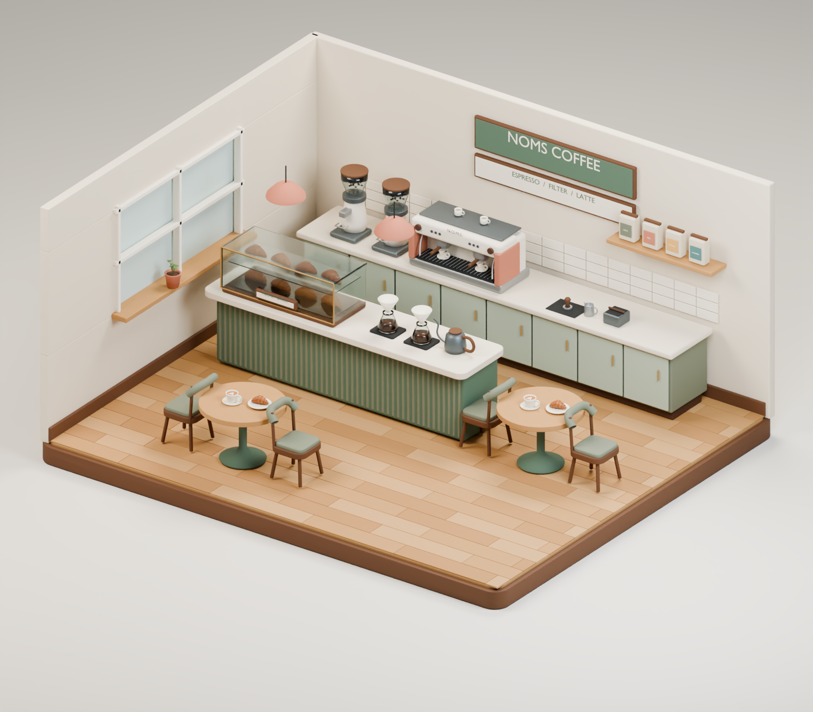
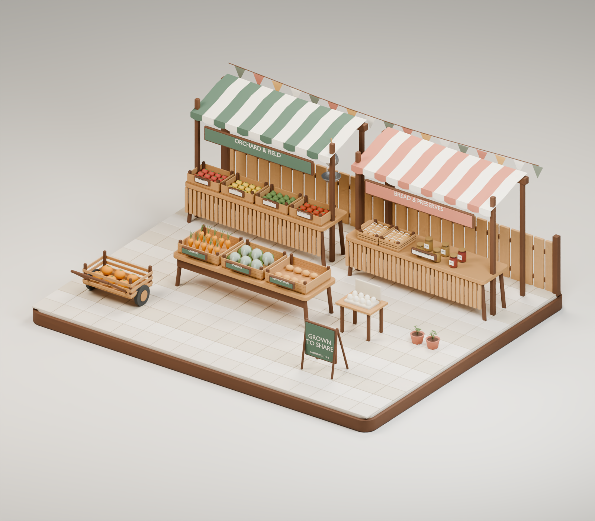
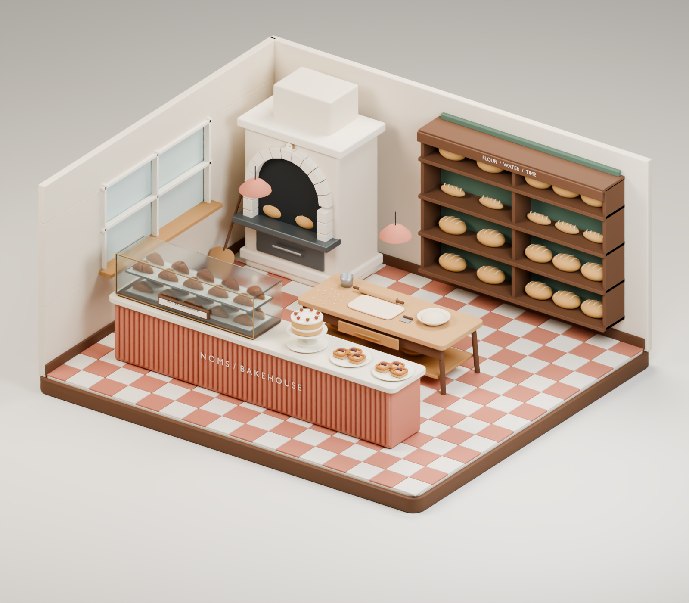
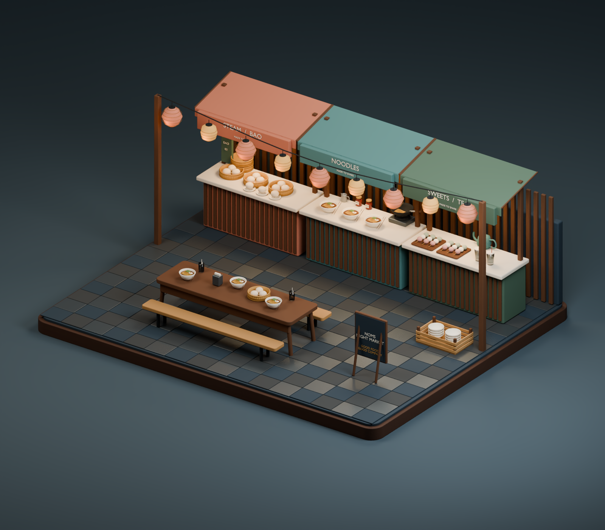
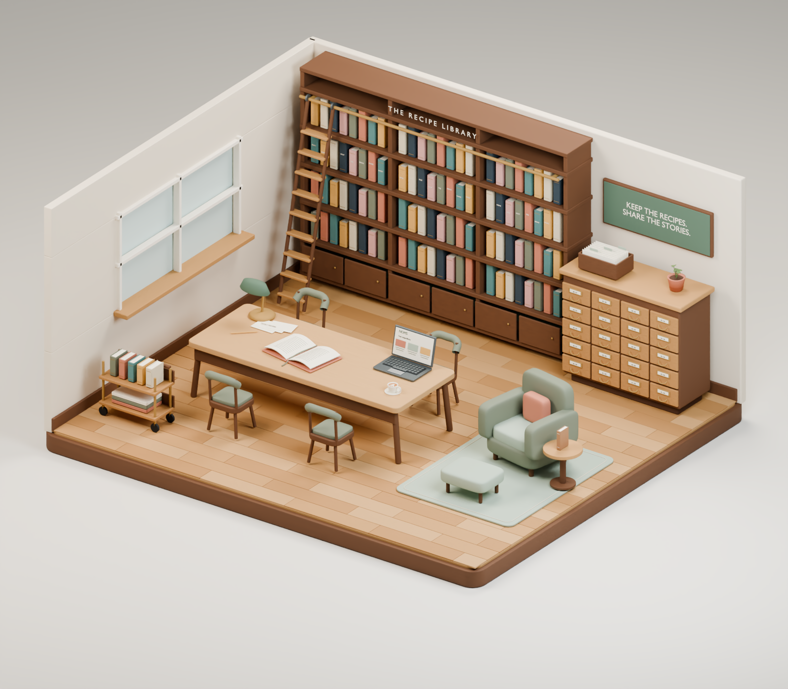

01Specialty coffee shopSage cabinetry, espresso and pour-over equipment, fresh pastries and café seating.Blender masterGLB modelFull-size render ↗
02Farmers’ marketStriped awnings, seasonal produce, bread, preserves and a wooden handcart.Blender masterGLB modelFull-size render ↗
03Artisan bakeryA stone hearth oven, baker’s workbench, croissants, sourdough and fruit pastries.Blender masterGLB modelFull-size render ↗
04Night marketWarm paper lanterns, bao, noodle bowls, sweets, tea and a shared dining table.Blender masterGLB modelFull-size render ↗
05Recipe libraryCookbooks, a recipe-card catalog, shared reading table and a quiet reading nook.Blender masterGLB modelFull-size render ↗